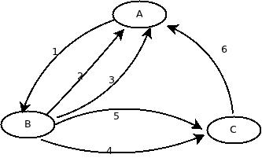
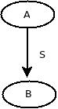
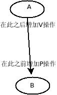

两道有趣的进程同步题
考研复习OS中，直到认真看起来才发现自己原来什么都不懂。 ——2012年10月9日11:18PM
需知
信号量：
typedef struct { int value; struct process *L; }semaphore;P操作：
P(S){ S.value--; if(S.value < 0){把此进程回到到与此资源相关的等待队列中并将此进程挂起} }V操作：
V(S){ s.value++; if(S.value <= 0){从此资源相关的等待队列中唤醒一个进程;} }
题目1：
一个仓库中只库存两种产品：A和B，需要满足条件如下：
- A的产品数量-B的产品数量 < M
- B的产品数量-A的产品数量 < N
- 每次只能存一种产品
其中M，N均为整数。
A数量与B数量相互制约，假设当前时刻A最多可以再存Sa个，B最多可以再存Sb个，则Sa开始时为M-1，Sb开始为N-1，A每库存一个，Sa应该减1（减少一个），Sb应该加1（从题目中2式看出，A加1，B同样加1，不等式仍旧成立）；同理B每库存一个Sb减1，Sa加1。
每次只能存一种产品表明仓库中临界资源。
semaphore mutex=1; semaphore Sa=M-1, Sb=N-1; ProcessA(){ P(Sa); P(mutex); 存一个A产品; V(Sb); V(mutex); } ProcessB(){ P(Sb); P(mutex); 存一个B产品; V(Sa); V(mutex); }
题目2：
三个合作进程A，B，C，需要依次通过同一台输入设备输入各自的数据a，b，c，且输入设备互斥，A接受a，B接受b，C接受c。
A，B，C分别进程如下运算：
A: x=a+b
B: y=a*b
C: z=y+c-a
最终由A进程负责将x，y，z结果打印出来。
前趋图：

由于依次通过同一设备，故顺序为A->B->C，即图中的1，4.
A中需要B输入的数据b，所以必须在B接收完b后A的计算才能运行。即图的2
C需要B的运算结果，故C要等B计算完后才能计算，即图的5
A需要B，C的运算结果y，z，所以必须B，C计算完成后A才能打印，即图的3，6
输入设备是互斥的，需要互斥信号量。
semaphore mutex=1; semaphore s1=s2=s3=s4=s5=s6=0; ProcessA(){ P(mutex); // 获得输入设备 输入a; V(mutex); V(s1); P(s2); x=a+b; P(s3); P(s6); 打印x,y,z; } ProcessB(){ P(s1); P(mutex); 输入b; V(mutex); V(s4); V(s2); y=a*b; V(s5); V(s3); } ProcessC(){ P(s4); P(mutex); 输入c; V(mutex); P(s5); z=y+c-a; V(s6); }只要理解一个同步的情况，上面6个同步的情况就非常简单：

A必须先于B完成，可以使用一个信号量来实现：
semaphore S=0; A(){ ....; V(S); } B(){ P(S); ....; }若B先于A执行，则P(S)由于S.value–后<0故挂起；当A执行V(S)后执行S.value++后S.value=0满足value<=0唤醒B，即A先于B执行。
为方便记忆：

这样再看6个同步的题目2便简单多了。